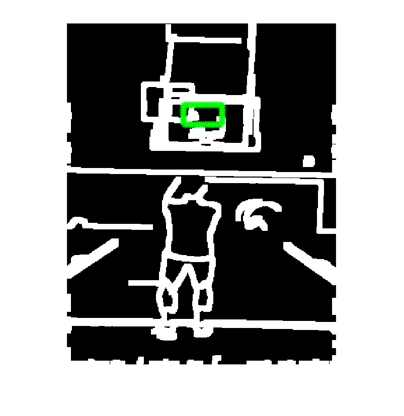
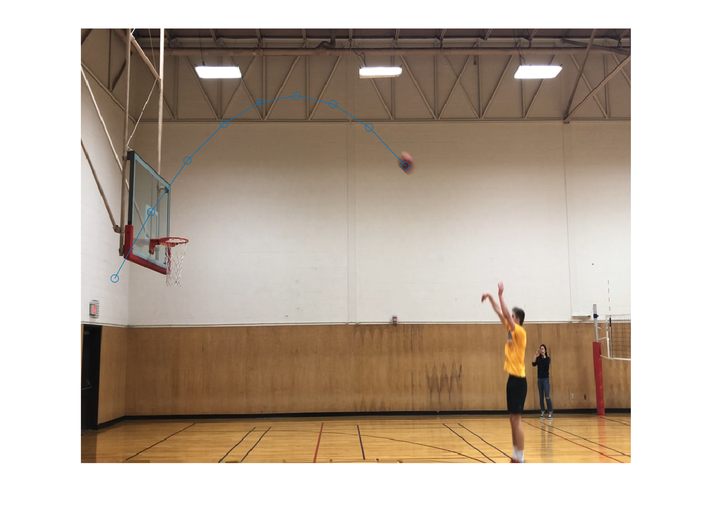

We are planning to make a basketball predictor that can predict where the basketball will land. We want to solve this because as sports fans, we find that it’s interesting to know if the basketball could be shot right into the basket before it lands. However, as human beings, our prediction is not that accurate. Therefore, we want to use the machine that has much better computing abilities to solve the problem. Our ultimate goal is to make the machine recognize basketball in a video and predict where the basketball will land when it just leaves the player’s hands.
Training Case
Testing Case
Back View
Side View
We have four members in the team. We are guided by Mohit Gupta, professor of Computational Photography at UW-Madison.
Task |
Time |
|
1. Take videos, divide into individual frames, and locate ball |
Sept - Early Oct |
|
2. Track and record the positions of the ball |
Mid Oct - Early Nov |
|
3. Build a mathematical model to predict the initial velocity (including direction) and the acceleration of the ball. |
Early Nov - Late Nov |
|
4. Compute and print the projectile. Also build the website and prepare for the presentation. |
Late Nov - Early Dec |
Referenced from latest scientific research paper in the industry.
Yu Zhao, Rennong Yang, Guillaume Chevalier, Rajiv Shah, and Rob Romijnders used Deep Bidirectional LSTM and Mixture Density Network with RNN models to predict basketball trajectories by relying solely on the movement data. This method can predict a basketball shoot is a make or a miss. They have different models for different distances from the basket. The speed and the accuracy of the trajectory of their model was said to outperform others. This method can help coaches and players to decide when and where to shoot.
Jerry Giese and Matthew Wilson built a method to localize the trajectory of basketball shoots in two dimensional. The method contains image stabilization to get rid of camera shakes, Hough transforms to track the center of the ball, and then use the tracked coordinates of the center to predict the trajectory by using total least squares fit. For the tracking part, they used a Matlab function called "imfindcircles" which using Hough transform. They improved the method by adding priority to circles near the position of the ball from last frame and initializing with a manually-added position of the ball in the first frame. They used the first three to fifteen frames to fit a parabola to predict the trajectory. The method they used can predict the trajectory within three tenth of a second and do well with cluttered background. Several issues are: 1. It's just for 2D. 2. With low light, the basketball will become blurred and hard to predict. 3. Ignore the complexity of the shot will make or miss but just focus on if the parabola will cross the center of the hoop instead. Some statistical models may be needed.
We extracted frames from slow motion video (1/24 second per frame) using Videoreader provided by Matlab and did analysis based on the image.
We wrote the part that tracks the ball and set up the threshold to reduce impact of noise, which fastens the process to locate the ball.
We also decided to use physics formula and use relationship of velocity and acceleration to compute the distance in corresponding time to see if the ball will hit the basket. Mathematical formula may not work in our case.
We decided to use tripod to take videos from a static point. Videos are to be slow-motion to ensure quality and only in this way the ball can keep its circular shape. Since the board is fixed in the video, we can then locate the center of basket board only once and keep using that x, y coordinates. Next time we need to apply physics formula and compute the result from two angles.
We finished Mid-term Report. You can view it by clicking on the Navigation bar.
We changed approach to detect the ball and used Background Subtraction to track its locations. This works in both normal and slow-motion videos.
We are also writing a script using physics formula to check if the ball is a hit or miss. Becasue of analyzing videos from 2 angles, this physics formula helps us build a 3D model. This is an improvement on current state-of-the-art which generally uses 2D models. However, we still have issue with back view, since there are many noises.
We also need to come up with an idea how to extract 4 clear frames in which the ball is detached from player's hands. That is to say, remove the first few frames in which the ball is still held by the player in Matlab code instead of subjective judgement. Moreover, the location of the board is also needed, which will be pluged in the physics formula later.
First, we used "edge" and "dilate" to find rough frames of the basketball board by comparing with an image of the frame of the basketball board that we got in advance. We compared the frames by matching the roundness, similar to process in HW2. Then we hardcoded to move the detected basketball board's center to right a little bit to find the height of the basketball board by tracing the edge of the board, so we got the number of pixels for the basketball board's edge.
We found the actual height of a regulated backboard is 1.1 meters from Wikipedia. Then we used ratio between pixels and meters of the centain scenario to calculate the gravity acceleration in pixels. We assumed the process of the ball flying in the sky as a free fall, so we used a physics formula to calculate the starting velocity in x-axis and y-axis:
x_velocity = (coordinates(1,1) - coordinates(2,1))/time
y_velocity = (coordinates(1,2) - coordinates(2,2) - 0.5 * g * time * time)/time
The coordinates were highest two balls' positions that we calculated previously. The time was calculated based on the frame of the video and the interval between two frames: 1*4/30 = 0.13. The g is the gravity acceleration we just calculated. Then by calculating the displacement vertically (goal.y - coordinates.y), we use another physics formula to calculate the time the ball needs to get to the height of the hoop (ignore the air resistance):
time_need = (-y_velocity + sqrt(y_velocity * y_velocity + 2 * g * y_dist))/g
Then because the ball moves as a uniform motion horizontally, we can calculate the x position of the ball when the ball falls at the same height of the hoop. We allow a certain error range for x position of the ball (± 20 pixels, which is almost the same as the diameter of the ball) and view all balls fall within this range to be a "shoot".
The reason we hardcoded is it is really complicated if we only used physics to predict the ball's trajectory. The way the ball falls into the hoop could be various depending on different angles and different velocities. The potential collisions between balls and hoops (or backboards) make this way too complicated to predict by using physics. (this probably could be saved with a large number of videos to train a model with deep learning).
Using Background Split again, we detect the location of ball in the back view. Then, we pinpoint the location of board by morphing the image and finding the baord's center and get a range that will ensure a hit. If the ball is within the range, we call it a hit. If the ball from both views are hit, then the result is a successful hit.